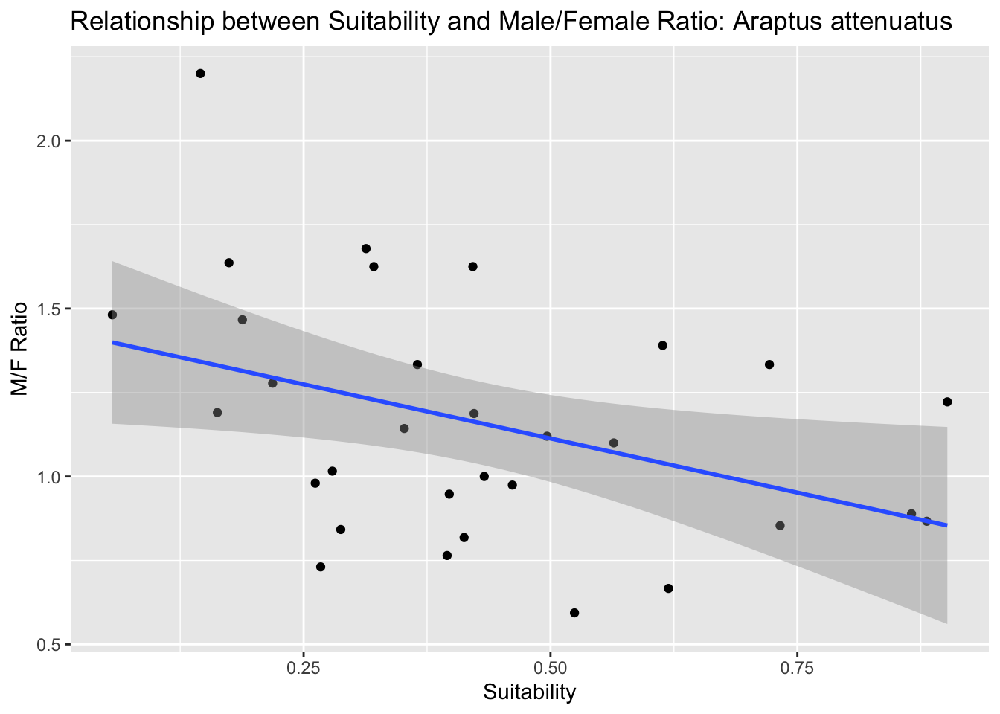
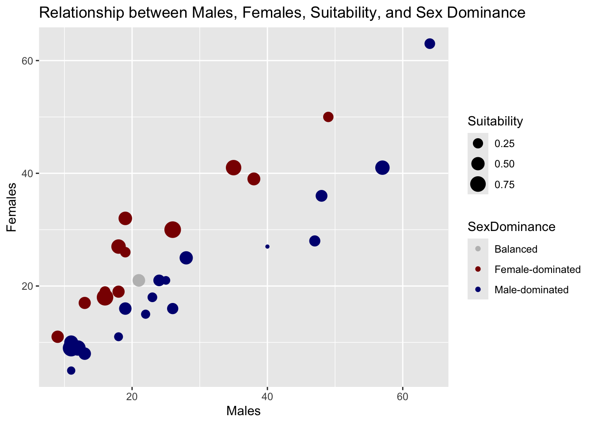

Araptus attenuatus the enigmatic Sonoran Desert Bark Beetle.
This homework is a bit quick but is designed to make sure that:
To make sure everyone can get their computer up-to-date with the proper set of libraries so that we can work with geospatial data, and
Give you some practice turning normal numerical data into geospatial coordinates and performing basic operations.
Spatial Libraries
The following code defines the set of necessary libraries for the next few weeks and then figures out which (potential) subset you need to install. It then installs them all in one call. It will not load them into your session, you’ll have to do that later in your code chunks.
(Hidden: Took up a lot of space)
The Data - Preprocessing
The data for this is some site-level data from the Sonoran Desert bark beetle. The URL is in the next chunk, and is currently being hosted on my class Github repository. Load it in.
Rows: 31 Columns: 9
── Column specification ────────────────────────────────────────────────────────
Delimiter: ","
chr (1): Site
dbl (8): Males, Females, Suitability, MFRatio, GenVarArapat, GenVarEuphli, L...
ℹ Use `spec()` to retrieve the full column specification for this data.
ℹ Specify the column types or set `show_col_types = FALSE` to quiet this message.
Interactive Map
Use the leaflet library and make an interactive map. If you can, add a label to each marker with the ID of the site. You can look at the provider tiles here and use on in the addProviderTiles() function.
There is a great tutorial here on how to customize the leaflet display. You may want to go look at it and see what you can use to make a better display.
Convert the spatial data in the beetle data.frame into an sf object. Make sure you set the Coordinate Reference System to \(4326\).
# convert raw data to simple features in your data.framebug_sf <-st_as_sf(bug, coords =c("Longitude", "Latitude"), crs =4326)
Questions
For these questions, you may want to look at the sf cheat sheet here to find the appropriate geospatial function.
How far apart (in km) are the sites Constitución (const) and San Francisquito (sfran)?
# Calculate the distance between the two sitesdistance <-st_distance(bug_sf[bug_sf$Site =="const", ], bug_sf[bug_sf$Site =="sfran", ])# Convert the distance from meters to kilometersdistance_km <- distance /1000# Print the distance in kilometersprint(distance_km)
Units: [m]
[,1]
[1,] 290.09
Answer: 290.09 km
Is there a correlation between habitat suitability and the ratio of males to female beetles sampled at each locale?
ggplot(bug, aes(x = Suitability, y = MFRatio)) +geom_point() +geom_smooth(method ="lm") +labs(title ="Relationship between Suitability and Male/Female Ratio: Araptus attenuatus",x ="Suitability",y ="M/F Ratio")
`geom_smooth()` using formula = 'y ~ x'

# Calculate the correlation coefficientcorrelation <-cor(bug$Suitability, bug$MFRatio)# Print the correlation coefficientprint(paste("Correlation coefficient:", correlation))
[1] "Correlation coefficient: -0.399726588628538"
Answer: This value indicates a weak negative correlation between habitat suitability and the ratio of male to female beetles sampled at each locale. The data suggests that there’s a slight tendency for areas with higher habitat suitability to have a lower proportion of male beetles, but this relationship is not very strong. Other factors might also be influencing the male-to-female ratio, or there might be more complex relationships at play.
Make a plot using ggplot of the data with suitability as the size of the points and the sex ratio as the fill color.
# Create a new column "SexDominance" based on MFRatiobug <- bug %>%mutate(SexDominance =case_when( MFRatio >1~"Male-dominated", MFRatio <1~"Female-dominated",TRUE~"Balanced" ))# Create a scatter plot with point size representing suitability and fill color representing sex dominanceggplot(bug, aes(x = Males, y = Females, size = Suitability, color = SexDominance)) +geom_point() +scale_color_manual(values =c("Male-dominated"="navyblue", "Female-dominated"="darkred", "Balanced"="grey")) +labs(title ="Relationship between Males, Females, Suitability, and Sex Dominance",x ="Males",y ="Females")
Reproject the data and plot it again using an EPSG code defined for Mexico UTM zone 12N (see epgs.io for projections).
bug_sf <-st_as_sf(bug, coords =c("Longitude", "Latitude"), crs =4326)# Use EPSG code for Mexico UTM zone 12N (EPSG:32612)utm_crs <-32612# Reproject the sf object to the UTM zonebug_sf_utm <-st_transform(bug_sf, crs = utm_crs)# Create the scatter plot with reprojected data (using bug_sf_utm)ggplot(bug_sf_utm, aes(x =st_coordinates(bug_sf_utm)[,1], y =st_coordinates(bug_sf_utm)[,2], size = Suitability, color = SexDominance)) +geom_point() +scale_color_manual(values =c("Male-dominated"="navyblue", "Female-dominated"="darkred", "Balanced"="grey"), na.value ="grey") +labs(title ="Relationship between Males, Females, Suitability, and Sex Dominance (UTM zone 12N)",x ="Easting (meters)",y ="Northing (meters)") +theme_minimal() +theme(plot.title =element_text(size =10) )

Source Code
---title: "In Class Activity: Spatial Points Assignment"author: "Briana Allman"date: "10/21/2024"format: html: code-tools: true toc: false---<center></center>This homework is a bit quick but is designed to make sure that:1. To make sure everyone can get their computer up-to-date with the proper set of libraries so that we can work with geospatial data, and2. Give you some practice turning normal numerical data into geospatial coordinates and performing basic operations.## Spatial LibrariesThe following code defines the set of necessary libraries for the next few weeks and then figures out which (potential) subset you need to install. It then installs them all in one call. It will not load them into your session, you'll have to do that later in your code chunks.***(Hidden: Took up a lot of space)***```{r setup, include=FALSE}needed_libraries <- c("sf", "maps", "units", "GGally", "raster", "mapproj", "leaflet", "rnaturalearth", "rnaturalearthdata" )# Determines which libraries you do not have# already installed.need_inst <- setdiff( needed_libraries, rownames( installed.packages()) )# Install the necessary ones.if( length( need_inst ) ) { install.packages( need_inst, dependencies = TRUE )}library (tidyverse)library(lubridate)library(sf)library(maps)library(units)library(GGally)library(raster)library(mapproj)library(leaflet)library(rnaturalearth)library(rnaturalearthdata)```## The Data - PreprocessingThe data for this is some site-level data from the Sonoran Desert bark beetle. The URL is in the next chunk, and is currently being hosted on my class [Github repository](https://github.com/dyerlab/ENVS-Lectures). Load it in.```{r}url <-"https://raw.githubusercontent.com/dyerlab/ENVS-Lectures/master/data/Araptus_Disperal_Bias.csv"bug <-read_csv( url )```### Interactive MapUse the `leaflet` library and make an interactive map. If you can, add a label to each marker with the ID of the site. You can look at the provider tiles [here](https://leaflet-extras.github.io/leaflet-providers/preview/) and use on in the `addProviderTiles()` function.There is a great tutorial [here](https://rstudio.github.io/leaflet/map_widget.html) on how to customize the leaflet display. You may want to go look at it and see what you can use to make a better display.```{r}bug <- bug %>%mutate(Site =as.factor(Site))# Create the leaflet mapleaflet(bug) %>%addTiles() %>%addMarkers(~Longitude, ~Latitude,label =~paste0("Site: ", Site),popup =~paste0("Site: ", Site, "<br>","Latitude: ", Latitude, "<br>","Longitude: ", Longitude) )```### Converting to `sf` ObjectsConvert the spatial data in the beetle data.frame into an `sf` object. Make sure you set the Coordinate Reference System to $4326$.```{r}# convert raw data to simple features in your data.framebug_sf <-st_as_sf(bug, coords =c("Longitude", "Latitude"), crs =4326)```### QuestionsFor these questions, you may want to look at the `sf` cheat sheet [here](https://github.com/rstudio/cheatsheets/raw/main/sf.pdf) to find the appropriate geospatial function.How far apart (in km) are the sites Constitución (`const`) and San Francisquito (`sfran`)?```{r}# Calculate the distance between the two sitesdistance <-st_distance(bug_sf[bug_sf$Site =="const", ], bug_sf[bug_sf$Site =="sfran", ])# Convert the distance from meters to kilometersdistance_km <- distance /1000# Print the distance in kilometersprint(distance_km)```***Answer: 290.09 km***Is there a correlation between habitat suitability and the ratio of males to female beetles sampled at each locale?```{r}ggplot(bug, aes(x = Suitability, y = MFRatio)) +geom_point() +geom_smooth(method ="lm") +labs(title ="Relationship between Suitability and Male/Female Ratio: Araptus attenuatus",x ="Suitability",y ="M/F Ratio")# Calculate the correlation coefficientcorrelation <-cor(bug$Suitability, bug$MFRatio)# Print the correlation coefficientprint(paste("Correlation coefficient:", correlation))```***Answer: This value indicates a weak negative correlation between habitat suitability and the ratio of male to female beetles sampled at each locale. The data suggests that there's a slight tendency for areas with higher habitat suitability to have a lower proportion of male beetles, but this relationship is not very strong. Other factors might also be influencing the male-to-female ratio, or there might be more complex relationships at play.***Make a plot using `ggplot` of the data with suitability as the size of the points and the sex ratio as the fill color.```{r}# Create a new column "SexDominance" based on MFRatiobug <- bug %>%mutate(SexDominance =case_when( MFRatio >1~"Male-dominated", MFRatio <1~"Female-dominated",TRUE~"Balanced" ))# Create a scatter plot with point size representing suitability and fill color representing sex dominanceggplot(bug, aes(x = Males, y = Females, size = Suitability, color = SexDominance)) +geom_point() +scale_color_manual(values =c("Male-dominated"="navyblue", "Female-dominated"="darkred", "Balanced"="grey")) +labs(title ="Relationship between Males, Females, Suitability, and Sex Dominance",x ="Males",y ="Females")```Reproject the data and plot it again using an EPSG code defined for Mexico UTM zone 12N (see [epgs.io](https://epsg.io) for projections).```{r}bug_sf <-st_as_sf(bug, coords =c("Longitude", "Latitude"), crs =4326)# Use EPSG code for Mexico UTM zone 12N (EPSG:32612)utm_crs <-32612# Reproject the sf object to the UTM zonebug_sf_utm <-st_transform(bug_sf, crs = utm_crs)# Create the scatter plot with reprojected data (using bug_sf_utm)ggplot(bug_sf_utm, aes(x =st_coordinates(bug_sf_utm)[,1], y =st_coordinates(bug_sf_utm)[,2], size = Suitability, color = SexDominance)) +geom_point() +scale_color_manual(values =c("Male-dominated"="navyblue", "Female-dominated"="darkred", "Balanced"="grey"), na.value ="grey") +labs(title ="Relationship between Males, Females, Suitability, and Sex Dominance (UTM zone 12N)",x ="Easting (meters)",y ="Northing (meters)") +theme_minimal() +theme(plot.title =element_text(size =10) )```